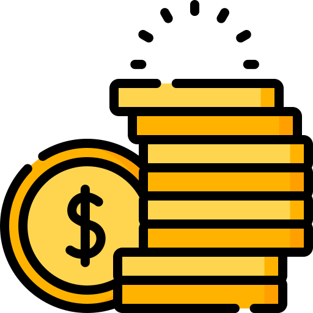

O que é o Tesouro Direto
 O Tesouro Direto Selic é garantido pelo Tesouro Nacional, ou seja, pelo Governo Federal. Para você perder seu dinheiro, o Brasil precisaria quebrar. Só que, para o Brasil quebrar, os bancos (e consequentemente a poupança), quebrariam antes. Por isso ele é considerado mais seguro até mesmo do que a Poupança.
 A B3 é uma das principais empresas de infraestrutura de mercado financeiro no mundo, com atuação em ambiente de bolsa e de balcão. Sociedade de capital aberto – cujas ações (B3SA3) são negociadas no Novo Mercado –, a Companhia integra os índices Ibovespa, IBrX-50, IBrX e Itag, entre outros.
A B3 é uma das principais empresas de infraestrutura de mercado financeiro no mundo, com atuação em ambiente de bolsa e de balcão. Sociedade de capital aberto – cujas ações (B3SA3) são negociadas no Novo Mercado –, a Companhia integra os índices Ibovespa, IBrX-50, IBrX e Itag, entre outros.